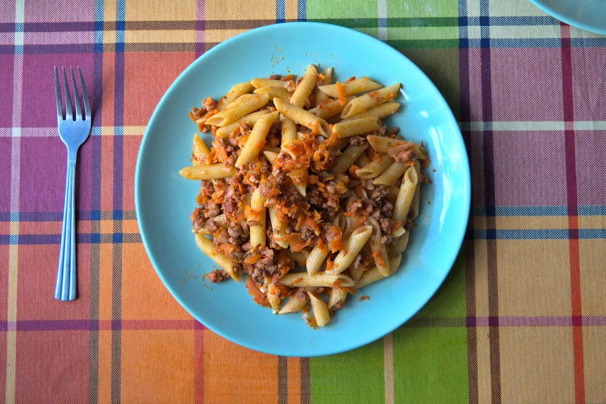

Pasta Navy Style

This is one of the three pasta dishes that I usually cook. It’s a Russian pasta recipe that is fast and easy to make and is quite tasty.
Ingredients
Here are the ingredients for about two hearty adult portions:
- 250g pasta. Usually I prefer to use fusilli or penne, but any short-cut pasta should do.
- 300-400g ground beef
- 3-4 tomatoes
- 1 carrot
- ½ onion
- 2-3 garlic cloves
- Cumin
- Paprika
Directions
- Add olive oil to your frying pan, heat it to medium-high heat.
- Chop some onions and add them to the preheated pan.
- After a couple of minutes add the ground beef to the pan, salt it and mix it a bit with the onions in the pan.
- When the meat is almost done, mince the garlic and add it together with the cumin and paprika to the pan.
- Cook the pasta in a pot until its done al dente while the beef is being cooked.
- Grate the tomatoes over the pan using a grater with small-sized slots, in such a way that the tomato paste and juice falls right away from the grater to the pan.
- Grate the carrot using a grater with medium-sized slots and add it to the pan.
- Salt some more to taste, and add some black pepper to taste, mix.
- Cook it over medium/medium-low heat for about 10-15 minutes or until the water and juices from the tomatoes have almost completely evaporated.
- Once (or if) the pasta and beef is already cooked, add the pasta to the pan and cook for another couple of minutes.
- Serve hot and enjoy!
Originally published at https://www.yaroslavps.com/food/navy-style-pasta/
Contribution
- Yaroslav de la Peña Smirnov – website, other website, donate